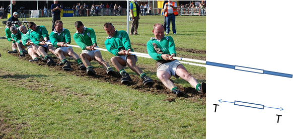
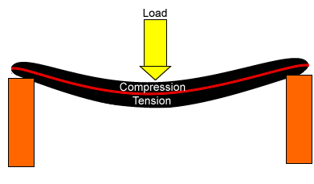
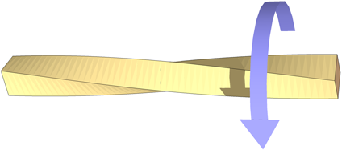

The Impact of Forces and Stresses on Objects
Table of Contents
1 Forces and stresses
- There is a range of different forces and stresses that can act on materials.
- When designing a product it is important to understand the forces that will be put on it so you can choose the best materials and make the product strong enough.
Tension
- Tension may be described as the pulling force transmitted axially by the means of a string, cable, chain, or similar one-dimensional continuous object, or by each end of a rod, truss member, or similar three-dimensional object; tension might also be described as the action-reaction pair of forces acting at each end of said elements. Tension could be the opposite of compression.

Compression
- In mechanics, compression is the application of balanced inward ("pushing") forces to different points on a material or structure, that is, forces with no net sum or torque directed so as to reduce its size in one or more directions.

Torsion
- A torsion field (also called axion field, spin field, spinor field, and microlepton field) is a feature of a he] theory of energy in which the quantum spin of particles can be used to cause emanations lacking mass and energy to carry information through vacuum orders of magnitude faster than the speed of light.

Shear
- Shearing in continuum mechanics refers to the occurrence of a shear strain, which is a deformation of a material substance in which parallel internal surfaces slide past one another. It is induced by a shear stress in the material.
2 Reinforcing/stiffening techniques
- Some materials may need strengthening by the addition of extra materials or by shaping.
Use of composite materials
- Composite materials are made from two or more different types of material. For example, MDF is made from wood fibres and glue, and fibreglass is made from a mesh of glass fibres set in a tough polymer.
- The materials for a composite material are chosen because they have different properties that combine to make a more useful material. Steel-reinforced concrete is a composite material. It is made by pouring concrete around a mesh of steel cables. When the concrete sets, the material is:
- strong when stretched (because of the steel)
- strong when squashed (because of the concrete)
- Some really useful composite materials are fibreglass and carbon fibre. These materials take a woven mat of high-tensile fibres made from glass or carbon, lay them over a mould and cover them with a plastic resin that sets hard.
- These can be layered and built up to make the incredibly strong.
- Another excellent material is Kevlar, this is used in police and military equipment.
- Click on this link to read more.
Ribbing to strengthen structures
- Manufacturers want to keep costs as low as possible, so the less material they can use the better.
- By adding a rib to a product you can increase the strength.
- Plastic bottles have ribs in the to improve their strength, along with cardboard boxes.
3 Recap
- A product needs to be strong to withstand the forces that might be put on it.
- Tension (pulling).
- Compression (squashing).
- Torsion (twisting).
- Shear (opposite directions).
- Fibreglass and carbon fibre use a fibre mat and resin to make a strong, lightweight composite material.
- Intelligent design can increase strength and use less material.
Practice Questions
- Draw diagrams for the following forces:
- Tension.
- Compression.
- Torsion.
- Shear.
- What is carbon fibre made from?
- Explain why carbon fibre is stronger the carbon fibre matting or plastic resin on their own.